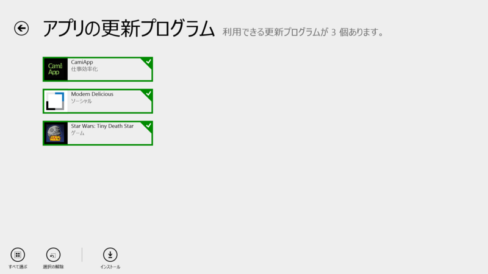
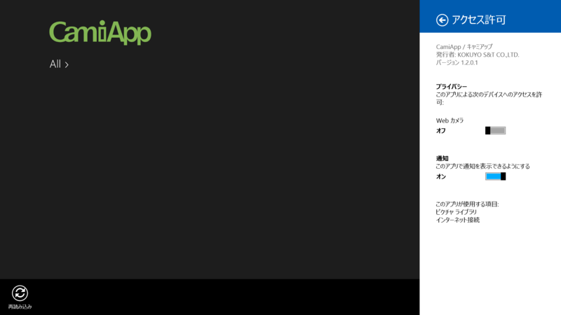
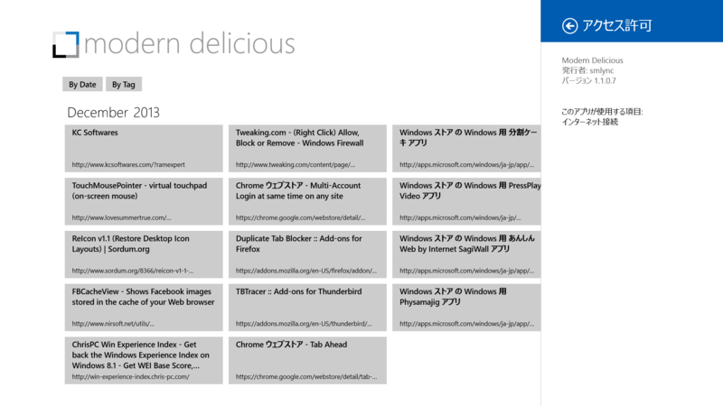

CamiApp 1.2.0.1、Modern Delicious 1.1.0.7
執筆日時：

CamiApp 1.1.0.1 → 1.2.0.1

―――――――――――――――――――――――
【お知らせ】[V1.2.0]
―――――――――――――――――――――――
■Windows8.1対応
- ホーム画面をWindows8.1 UIに対応しました
■不具合修正
- 軽微なバグ
CamiApp＜キャミアップ＞ - コクヨS&T の Windows ストア アプリ。キングジムの SHOT NOTE をパクったからインスパイアされた製品なのかな。割りとよさげなのだけど、まだ使ったことがない。
Modern Delicious 1.0.0.5 → 1.1.0.7

Fixes update bug preventing the import of changes to posts made from other clients. Semantic zoom tiles now half size per power user feedback.
Release 4 adds additional locale support.
Release 5 fixes bugs related to tags. Spaces in tags are now fully supported. Casing issues in semantic zoom should now be fixed.
Release 6 converts to Windows 8.1 and adds search. Fixes broken Delicious Registration link.
Delicious 使いなら入れておきたい Windows ストア アプリ。［共有］チャームからのブックマークがいい感じ。逆にいえば、それだけ。でも、それでいいんじゃないかな。